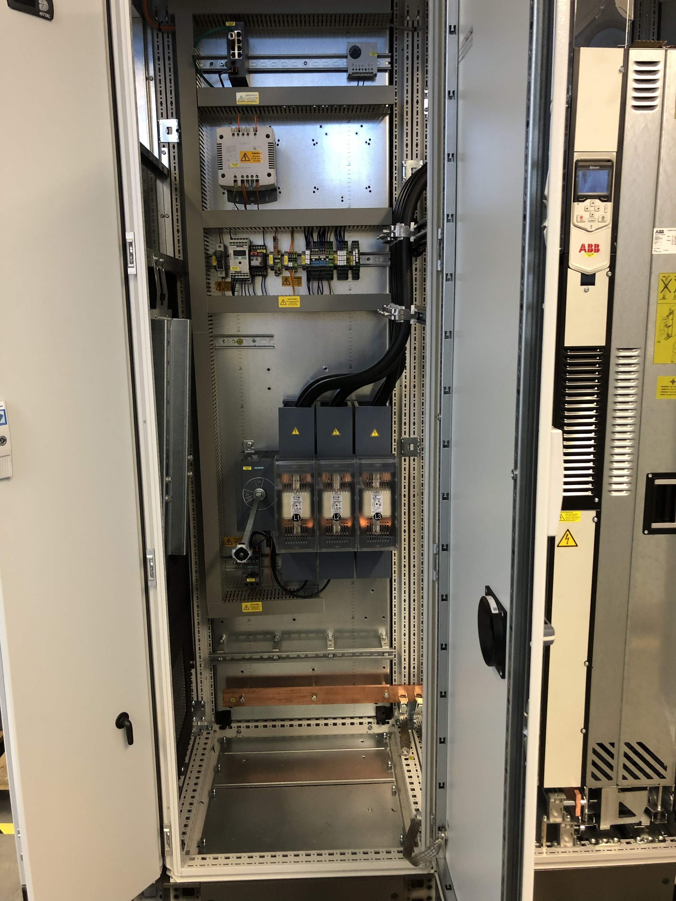
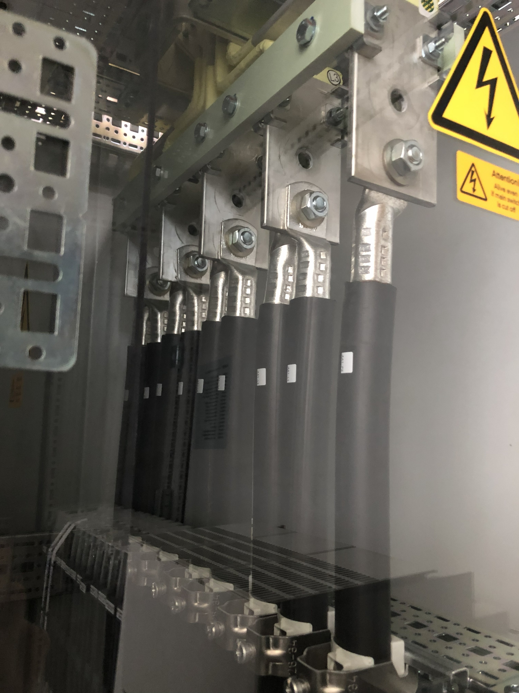
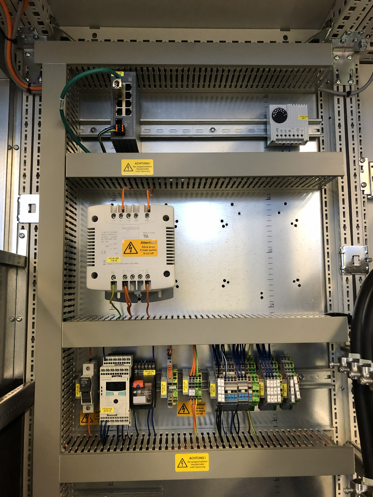

Freie Kapazität für ausgewählte Engineering-Projekte
Elektrokonstruktion, die in der Fertigung funktioniert nicht nur im PDF gut aussieht.
Ich übernehme klar abgegrenzte EPLAN-P8-/Pro-Panel-Pakete, Reviews und fertigungstaugliche Elektro-Dokumentation — direkt durch Herrn Dietz, ohne Agentur-Ebene und mit externem Projektfokus.
13+ Jahre SondermaschinenbauEPLAN P8 · Pro Panel · SmartwiringAntriebstechnik · Motion Control · Safety14 Märkte bedient — in vielen davon auch vor Ort
20 Minuten reichen meist, um Scope, Risiken und sinnvolle nächste Schritte zu klären.
Einordnung
Erfahrung, bevor es in Details geht.
Diese Kennzahlen ordnen kurz ein, aus welchem Praxisumfeld die folgenden Branchen, Standards und Projektsituationen kommen.
13+
Jahre Engineering-Erfahrung im industriellen Maschinenbau
14
Bediente Märkte; in den meisten davon auch mit Vor-Ort-Erfahrung
50+
Realisierte Projekte — von Schaltplan bis Serienreife
CE
CE / UL / EMV-konforme Konstruktion und Dokumentation
Arbeitsumfeld
Wo ich mich schnell zurechtfinde.
Relevant ist nicht die längste Tool-Liste, sondern technisch fundiertes Verständnis: Fertigung, Inbetriebnahme, Normen, Schnittstellen, Übergabe und Research-Projekte, in denen Systeme Richtung Marktreife gebracht werden müssen.
Indien · China · Pakistan · Türkei · USA · Kanada · Mexiko · Brasilien · Argentinien · Spanien · Deutschland · Belgien · Irland · Schweden
Standards
CE · UL · EMV-Messung · Safety Circuits · DGUV-Schulung
Tools
EPLAN P8 · Pro Panel · Smartwiring · TIA Portal · Automation Studio · ACOPOS P3
Praxisbilder
Technik, die nach echter Fertigung aussieht.
Einblicke in typische Schaltschrank-, Verdrahtungs- und Anlagenumgebungen, wie sie bei sauber geplanter Elektrodokumentation zusammenkommen.

SchaltschranknäheVerdrahtung, Klemmen, Netzwerk- und Steuerungskomponenten müssen in Planung und Fertigung zusammenpassen.Klemmen und I/OSignalzuordnung, Kabel, Klemmenplan und SPS-Liste brauchen einen sauberen gemeinsamen Stand.

AnlagenumfeldElektrokonstruktion endet nicht im Plan: Maschine, Prozess, Montage und Inbetriebnahme bestimmen die Qualität der Übergabe.
Typische Fehlerbilder
Wenn diese Fehler bekannt vorkommen, lohnt sich ein Blick von außen.
Wenn Copy-Paste aus Altprojekten, manuelle Listen oder unklare Schnittstellen zu Nacharbeit vor FAT, SAT oder Inbetriebnahme führen, hilft ein fokussierter Blick von außen. Externe Unterstützung bleibt auf dieses Projekt konzentriert — ohne Ablenkung durch Daily Business und interne Themen.
Altprojekt-Fehler
Neue Maschine, alte Projektlasten.
Aus ähnlichen Altprojekten werden Seiten, Makros oder Geräte kopiert — inklusive alter Optionen, falscher Parameter, nicht entfernter Reserven oder kundenspezifischer Sonderfälle.
Ergebnis: Projektkopien werden gezielt geprüft, bereinigt und wiederverwendbar gemacht.
Stücklisten-Risiko
Die Stückliste passt nicht sauber zum Schaltschrank.
Artikel, Zubehör, Klemmen, Kabel, Stecker oder Reservekanäle fehlen, sind doppelt oder passen nicht zum aktuellen Planstand. Einkauf und Schaltschrankbau merken es oft erst spät.
Ergebnis: BOM, Artikeldaten, Klemmen und Fertigungsunterlagen werden gegeneinander geprüft.
Verdrahtungs- & IBN-Risiko
Fehler fallen erst beim Verdrahten oder in der Inbetriebnahme auf.
Verdrahtungsfehler durch unklare Zielklemmen, vertauschte Adern, widersprüchliche Kabel-/Klemmenlisten oder späte Änderungen verbrennen Inbetriebnahmezeit, obwohl sie in der Dokumentation auffallen könnten.
Ergebnis: weniger Suchzeit zwischen Schaltschrankbau, E-Konstruktion und IBN.
SPS-/I/O-Abgleich
EPLAN und SPS beschreiben nicht mehr dieselben Signale.
I/O-Adressen, Symbolik, Safety-Signale oder dezentrale Teilnehmer ändern sich im Projektverlauf. Elektrisch liegt ein Sensor auf X, im SPS-Programm oder in der Liste steht Y.
Ergebnis: saubere Signal-, Klemmen-, Kabel- und I/O-Zuordnung vor Übergabe.
Technische Tiefe
Nicht mehr Fläche — mehr prüfbare Substanz.
Entscheidend ist Konsistenz: BMK, Klemmen, Kabel, Stückliste, Safety und Übergabe müssen zusammenpassen. Ein abgegrenzter externer Scope hält Aufwand, Ergebnis und Budget kontrollierbar.
OKKlemmen und Kabel sind gegen Plan und Stückliste geprüft.
CHECKSafety-Kreis und Reset-Konzept vor Freigabe final bestätigen.
OKFertigungsdaten sind nicht nur PDF, sondern auswertbar.
01 Scope02 Struktur03 Plan04 Review05 Übergabe
Leistungen
Was ich für Ihr Projekt liefere.
EPLAN P8/Pro Panel, Schaltschrankdaten, Klemmen-/Kabellisten, Stücklisten, Reviews und Retrofit-/IBN-Support — remote oder vor Ort, mit klar vereinbartem Scope und Projektbudget vor Start.
01 / EPLAN
EPLAN P8 Engineering
Schaltpläne mit klarer Anlagenstruktur, BMK-Logik, Klemmen-, Kabel- und Stücklistendaten. Ziel ist eine Dokumentation, die Fertigung, Inbetriebnahme und Service ohne Ratespiel nutzen können.
Konditionen auf Anfrage
02 / PANEL
Schaltschrank & Pro Panel
Schaltschrankauslegung, Komponentenplatzierung, Pro-Panel-Aufbau, Smartwiring-Daten und Fertigungsunterlagen. Praktisch gedacht: Wärme, EMV, Zugänglichkeit und Verdrahtung müssen zusammenpassen.
Konditionen auf Anfrage
03 / DRIVES
Antriebe, Motion & Safety
Unterstützung bei Antriebstechnik, ACOPOS P3, Achsen, Sensorik, Safety Circuits und elektrischen Schnittstellen. Besonders dort, wo Mechanik, Steuerung und Elektrik sauber zusammenspielen müssen.
Konditionen auf Anfrage
04 / FIELD
Review, Retrofit & Inbetriebnahme
Fehlersuche, technische Reviews, Retrofit-Vorbereitung und Vor-Ort-Unterstützung. Ich suche nicht nach Schuldigen, sondern nach Ursachen, Nebenwirkungen und einer Lösung, die dauerhaft hält.
Konditionen auf Anfrage
Über mich
Aus dem Maschinen- und Anlagenbau — mit Praxis über den ganzen Projektweg.
Ich bin Patrick Dietz. Meine Basis kommt aus dem Maschinen- und Anlagenbau: Lager, Arbeitsvorbereitung, Schaltschrankbau, VDE-Messungen, Montage, Installation an der Anlage und Kundeneinsätze. Deshalb kenne ich Elektrokonstruktion auch aus den Bereichen, die später mit den Unterlagen arbeiten.
Dazu kamen Lieferantenabklärungen, Projektmanagement, Kick-off-Termine, Lasten-/Pflichtenhefte mit Kunden, Abstimmung mit Montageteams, Montageabläufe und finale Abnahmen. In Research-Projekten habe ich Systeme von Konzept und Prototyp Richtung 0-Serie und Marktreife begleitet. Ich kenne Termin-, Kosten- und Projekte mit finanzieller Verantwortung — deshalb achte ich auf Dokumentation, die Fertigung, Montage, SPS, Inbetriebnahme und Kunde zusammenbringt.
Elektrokonstruktion ist gut, wenn Schaltplan, Stückliste, Montage, Verdrahtung, SPS-Signale und Abnahme zusammenpassen.
2012–2016Elektroniker für BetriebstechnikIndustrielle Anlagentechnik, Schaltschrankbau, Steuerungstechnik und elektrische Inbetriebnahme.
Vor Ort, wo die Maschine steht — Installation, Inbetriebnahme, Retrofit und Service.
International buchbarInternationale Inbetriebnahmen, Retrofit- und Fehlersucheinsätze sind möglich. Ich habe Märkte in Europa, Asien sowie Nord- und Südamerika bedient — in den meisten davon auch direkt vor Ort.
Patrick Dietz
Gründer & Inhaber
Einblicke
Aus der Werkstatt — Schaltschrank, EPLAN, 3D, Projektplanung.
Vier Disziplinen, die in jedem Projekt zusammenspielen — vom ersten Schaltplan bis zur dokumentierten Inbetriebnahme.

01 / Schaltschrank
Schaltschrankbau
Mechanische Auslegung, Bestückung mit Antrieben, FUs, Sicherungstechnik und Klemmplänen — EMV-gerecht und produktionsreif.
Sechs typische Engagements aus meiner bisherigen Karriere im industriellen Maschinenbau — Schaltplankonstruktion, Inbetriebnahme, R&D und internationale Vor-Ort-Einsätze.
Herausforderung: Komplexe Linienverbünde mit Wicklern, Längs- und Querschneideinrichtungen sowie Stapelanlagen — koordinierte Verdrahtung über mehrere Komponenten.
Lösung: Pro-Panel-3D-Aufbau, Smartwiring-Daten und EPLAN Fluid für die Pneumatik in einem konsistenten Gesamtprojekt.
Ergebnis: Fertigungsfähige Schaltschrank-Pakete mit sauberer Verdrahtungsdaten-Basis für die Produktion.
Herausforderung: Vollständige elektrische Inbetriebnahme einer Extrusionslinie unter Lockdown-Bedingungen, ohne reguläre Heimat-Unterstützung aus Deutschland.
Lösung: 5 Monate durchgehende Vor-Ort-Präsenz, eigenständiges Troubleshooting an Drives und Sensorik, parallele Schulung des Kundenpersonals.
Ergebnis: Termingerechte Inbetriebnahme trotz Reise-Restriktionen, übergebenes Kunden-Team mit operativem Know-how.
InbetriebnahmeTroubleshootingInternational
Weitere Projektbeispiele anzeigen
Rieter AGCH · R&D2023 — heute
CGC, E40 & Mikrowellen-Elektronik
Herausforderung: Mehrere Maschinenfunktionen von der Konzeptphase bis zur 0-Serien-Reife — inklusive EMV-Anforderungen für CE-Zertifizierung.
Lösung: Elektrische Konzeptarbeit, RCA-getriebene Iterationen, EMV-Messungen, Fertigungsunterlagen und Prototypen-Aufbau im interdisziplinären Team.
Ergebnis: 0-Serien-reife Funktionsmodule mit validierter Doku, eingespeist in Rieters internationale Produktion.
R&DACOPOS P30-Serie
Rieter AGInternational2023 — heute
Prototyp-Feldtest & Customer Onboarding
Herausforderung: Pilotkunden brauchten Installation, Inbetriebnahme und Schulung an neuen Prototypen — verteilt über mehrere Standorte.
Lösung: Selbstorganisierte Logistik der Prototypenteile, Vor-Ort-Installation, Erstellung von Umbau-Instruktionen, Schulung der Bediener.
Ergebnis: Pilotkunden produktiv und unabhängig, dokumentiertes Onboarding-Paket für Folge-Rollouts.
PilotkundenSchulungUmbau-Instruktionen
Rieter AG · Automation Studio2023 — heute
Komponentenanalyse & Supplier-Quality
Herausforderung: Wiederkehrende Komponenten-Issues bei mehreren Lieferanten — interdisziplinäre Probleme zwischen Elektrik, Software und Mechanik.
Lösung: Programmierung in Automation Studio (B&R), Lieferantenkoordination, strukturierte 8D-Reports und Root-Cause-Analyse.
Ergebnis: Lieferantenseitige Probleme nachhaltig gelöst, dokumentierter QS-Prozess für vergleichbare künftige Fälle.
8D-ReportsAutomation StudioRCA
Konkrete technische Details und Projekt-Insights gerne im persönlichen Gespräch.
Berufserfahrung
Über ein Jahrzehnt im industriellen Maschinenbau.
2023 — heute
Electrical Engineer — R&D
Rieter AG, Schweiz · Faseraufbereitungsmaschinen
Entwicklung und Pflege elektrischer Schaltpläne mit EPLAN P8
R&D für textile Maschinen — Strecke, Kämmerei, E40, E86
Internationale Projekte und Märkte: Indien, China, Pakistan, Türkei, USA, Kanada, Mexiko, Brasilien, Argentinien, Spanien, Deutschland, Belgien, Irland, Schweden — häufig auch vor Ort
Technischer Kundensupport und Inbetriebnahmen (ACHA, Intercot)
Absprache mit Produktion, Produktabkündigungen, Lieferantenkommunikation
Inbetriebnahmen und Kundensupport — u.a. 5 Monate am Stück in China während Corona
EPLAN Pro Panel, Smartwiring, EPLAN Fluid (Pneumatik)
EPLAN Pro PanelSmartwiringEPLAN FluidRCABOMInbetriebnahme
Technische Skills
Tools, Methoden, Erfahrungen.
EPLAN P8 / Pro Panel / Smartwiring95%
Antriebstechnik & Motion Control (B&R ACOPOS P3)85%
Schaltschrankbau & Verdrahtung90%
Safety Circuits & CE / UL Normen80%
Inbetriebnahme & Troubleshooting90%
Technische Dokumentation & BOM88%
Python & Excel — Datenanalyse70%
Software & Systeme
EPLAN P8EPLAN Pro PanelSmartwiringEPLAN FluidSAPECTRTeamcenterSiemens NXAutomation Studio (B&R)PythonExcel
Methoden & Domänen
ACOPOS P3Motion ControlAchsensynchronisationSafety CircuitsCE / UL NormenEMV-MessungenRisikobeurteilungenKlimaberechnung SchaltschrankTransformatoren & SpannungsversorgungKabelauslegungBOM-ManagementRetrofitRCALastenhefteInbetriebnahmeTroubleshooting
Wie ich arbeite
Vom Briefing bis zur Übergabe — vier klare Schritte.
Strukturiert, transparent, ohne Überraschungen. Sie wissen jederzeit, wo Ihr Projekt steht.
01
Aufgabe scharfziehen
Ich kläre mit Ihnen Maschine, Liefergegenstand, vorhandene Unterlagen, Normen, Schnittstellen und Terminplan. Ergebnis: keine vage Absicht, sondern ein belastbarer Scope.
02
Struktur vor Zeichnung
Bevor Seiten entstehen, wird die Anlagenstruktur festgelegt: Funktion, Einbauort, BMK-Systematik, Artikel- und Klemmendaten.
03
Engineering mit Zwischenständen
Schaltpläne, Pro Panel, Stücklisten und offene Punkte werden nicht erst am Ende sichtbar. Reviews gehören in den Prozess.
04
Übergabe, die nutzbar ist
Am Ende stehen Dokumentation, offene Punkte, Annahmen und nächste Schritte sauber da. Bei Bedarf mit Support für Fertigung, Inbetriebnahme oder Retrofit.
Ergebnisse
Was Kunden konkret gewinnen.
Weniger Rückfragen in der Fertigung
Wenn BMK, Klemmen, Kabel und Artikel sauber geführt sind, muss der Schaltschrankbau weniger interpretieren.
Schnellere Fehlersuche
Eine nachvollziehbare Struktur hilft, Messpunkte, Schnittstellen und Ursachen schneller einzugrenzen.
Bessere Übergabe an Service und Kunde
Dokumentation ist erst dann gut, wenn sie nach Projektende noch verstanden wird.
Planbare nächste Schritte
Nach Review oder Erstgespräch ist klar, welche Unterlagen fehlen, welche Risiken bestehen und was zuerst erledigt werden sollte.
Nächster Schritt
Persönliche technische Ersteinschätzung.
Beschreiben Sie Maschine, Aufgabe, Terminplan und Unterlagenstand grob — ohne vertrauliche Dateien oder interne Schaltpläne im Erstkontakt. Ich prüfe Passung, Scope, Risiken, Budgetrahmen und fehlende Informationen.
Ziel: eine ehrliche Einschätzung — passt / passt nicht / was fehlt / nächster Schritt.
Kurze Vorabklärung zur Passung — freundlich, fachlich und ohne technische Detailberatung ohne Auftrag.
20 Minuten technische Ersteinschätzung buchen
Im Gespräch kläre ich Maschine, Liefergegenstand, Unterlagenstand ohne vertrauliche Details, Schnittstellen, Terminplan und fachliche/zeitliche Passung.
Ehrliche Einschätzung: passt / passt nicht / was fehlt
Google-Meet-Link wird automatisch erstellt
Wenn es fachlich oder terminlich nicht passt, erhalten Sie eine klare Rückmeldung
Für eine konkrete Maschine, ein Fehlerbild oder einen unklaren Scope. Ergebnis: Einschätzung, Risiken, fehlende Unterlagen und nächster Schritt.
Auf Anfrage
EPLAN Qualitätsreview
Prüfung von Struktur, BMK, Klemmen, Kabeln, Artikeldaten, Fertigungstauglichkeit und Übergaberisiken — mit priorisierter Maßnahmenliste.
Auf Anfrage
Engineering Sprint
Mehrere Tage bis Wochen für Konstruktion, Pro Panel, Stücklisten oder Retrofit-Vorbereitung — mit definiertem Zwischenstand, Review und nutzbarer Übergabe.
Auf Anfrage
Projektbegleitung
Für größere Maschinenprojekte mit klarer Rolle, Schnittstellen, Reviews und Inbetriebnahme-Support.
Auf Anfrage
Häufige Fragen
Die wichtigsten Fragen vor dem ersten Gespräch.
Anfrage über das Formular oder per Mail. Innerhalb von 1 Werktag erhalten Sie eine persönliche Rückmeldung: passt / passt nicht, welche Unterlagen fehlen, welche Risiken sichtbar sind und ob ein Angebot sinnvoll vorbereitet werden kann.
Hilfreich sind eine kurze Maschinenbeschreibung, gewünschter Lieferumfang, EPLAN-Version/Toolstand, vorhandene Stückliste, Klemmen-/Kabellisten, I/O- oder SPS-Signalliste, Normen-/Kundenvorgaben und der aktuelle Termin- oder Fertigungsplan. Für den Erstkontakt reichen grobe Angaben — vertrauliche Projektdateien erst nach passender Abstimmung oder NDA.
Eher nicht passend sind reine SPS-/HMI-Programmierung ohne Elektro-/EPLAN-Bezug, anonyme Ausschreibungen ohne technische Unterlagen, reine Preisvergleiche ohne Scope oder Projekte, bei denen keine saubere Übergabe/Review gewünscht ist.
Ja, selbstverständlich. NDAs sind in meinem Geschäft Standard — auf Wunsch unterschreibe ich vor dem Erstgespräch. Auch kunden- und projektspezifische Verschwiegenheitsregelungen sind kein Problem.
Internationale Vor-Ort-Einsätze sind möglich. Reisekosten (Flug, Verpflegung, Übernachtung) werden 1:1 weitergegeben. Der Tagessatz vor Ort wird projektspezifisch vereinbart. Erfahrung besteht in 14 bedienten Märkten — u.a. Indien, China, Pakistan, Türkei, USA, Kanada, Mexiko, Brasilien, Argentinien, Spanien, Deutschland, Belgien, Irland und Schweden; in den meisten davon auch direkt vor Ort.
Weitere Fragen anzeigen
EPLAN P8 inklusive Pro Panel, Smartwiring und Fluid; SAP / ECTR / Teamcenter, Siemens NX, Automation Studio von B&R. Auf Wunsch arbeite ich auch direkt in der Tool-Umgebung Ihres Unternehmens — Lizenzen und Zugänge stellen Sie bereit.
Stundennachweis bei Stundensätzen, fester Betrag bei Paketen oder Festpreis-Projekten. Zahlung per Rechnung (14 Tage netto), PayPal, Kreditkarte oder Crypto (BTC, ETH, USDC). Geschäftskunden mit gültiger USt-ID erhalten Rechnung gemäß §13b UStG.
Ja — typische Engineering-Sprints sind 1–4 Wochen, längere Engagements bis zu 3 Monaten möglich. Bitte planen Sie Anfragen mit klarer Verfügbarkeit frühzeitig — meine Kapazitäten sind in der Regel 4–6 Wochen im Voraus belegt.
Kontakt
Lassen Sie uns über Ihr Projekt sprechen.
Direkter Draht — keine Hotline, keine Tickets. Schreiben Sie mir, ich melde mich persönlich zurück.
Hallo, ich bin Aria von DIETZ Engineering. Worum geht es? Ich kann erste technische Punkte vorqualifizieren.
Privatsphäre-Einstellungen
Diese Website speichert Theme- und Sprachpräferenz lokal im Browser. Schriftarten werden lokal geladen. Das Anfrageformular wird über Web3Forms übermittelt; die Terminbuchung öffnet einen externen Google-Calendar-Link erst nach Klick. Details findest du in der Datenschutzerklärung.
Du hast das Recht, nicht einzuwilligen oder deine Einwilligung jederzeit zu widerrufen.
// Was gespeichert wird
Technisch notwendigTheme- und Sprachpräferenz im Local Storage deines Browsers. Einwilligungsfrei nach §25 Abs. 2 Nr. 2 TTDSG, da unbedingt erforderlich für die Bereitstellung des Dienstes.
Schriftarten · lokal gehostetSchriftarten werden lokal von dieser Website ausgeliefert. Es erfolgt kein Abruf von Google Fonts beim Seitenaufruf.
Formular-Backend · Web3FormsBeim Absenden des Buchungsformulars werden deine Eingaben an Web3Forms übermittelt, um eine Mail an mich auszulösen. Auftragsverarbeitung gemäß Art. 28 DSGVO.
Terminbuchung · Google KalenderDie Terminbuchung ist ein externer Link zu Google Calendar. Google wird erst kontaktiert, wenn der Link aktiv geöffnet wird.